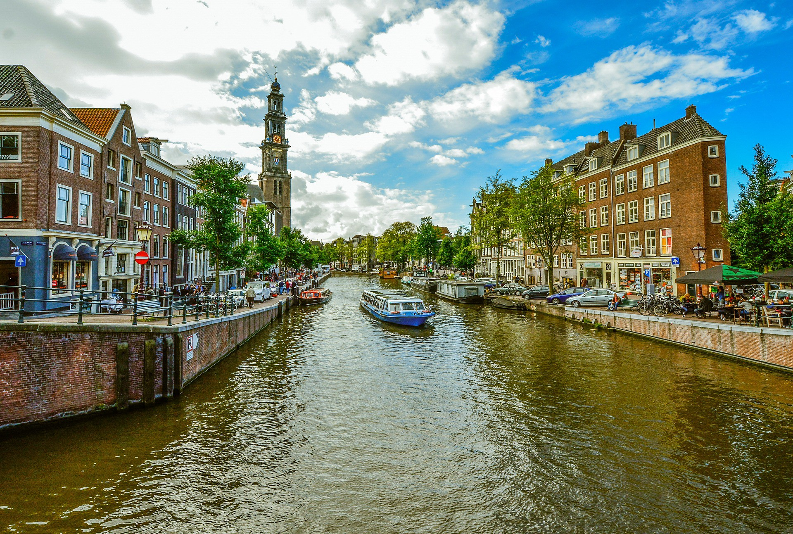

The Netherlands is a country that is part of (a constituent country) of the Kingdom of the Netherlands. Most of it is in Western Europe, but there are also some parts in the Caribbean. More than 17 million people live there. To the north and west of the European part of the Netherlands is the North Sea, and to the east is Germany and to the south is Belgium. The Netherlands is one of the countries that started the European Union. People who live in the Netherlands are called "Dutch". The language of the Netherlands is also called Dutch. The official capital of the Netherlands is Amsterdam. This however, is not the place where the government is seated, which is in The Hague. to read on go to wikipedia
